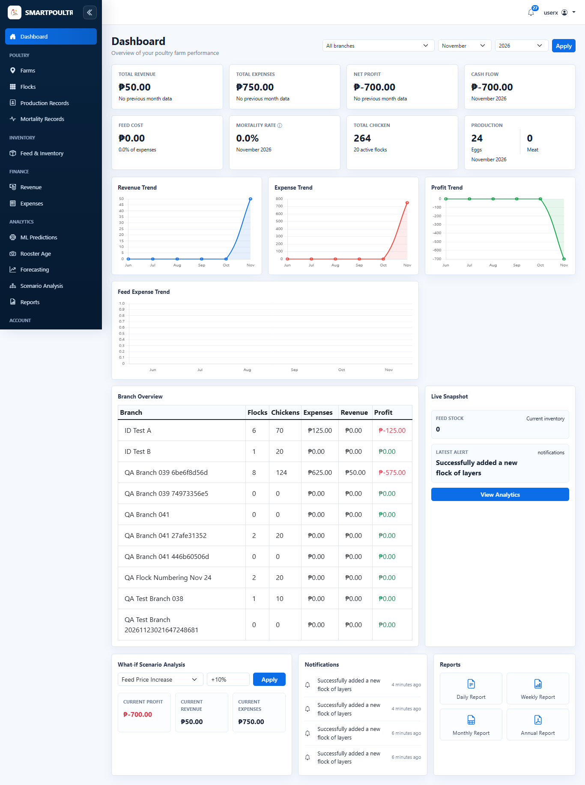
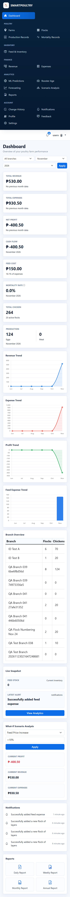
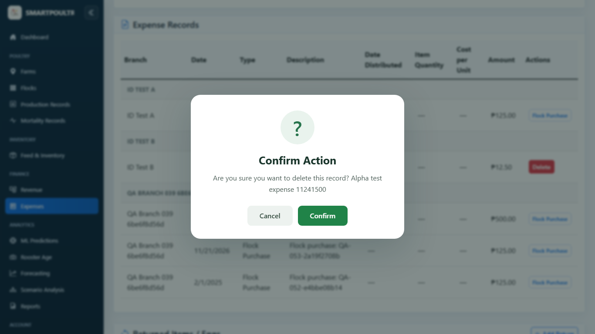
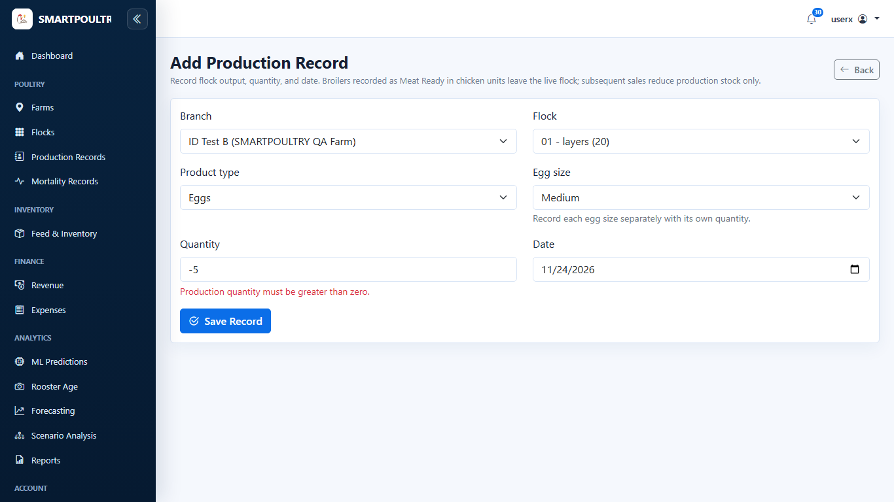
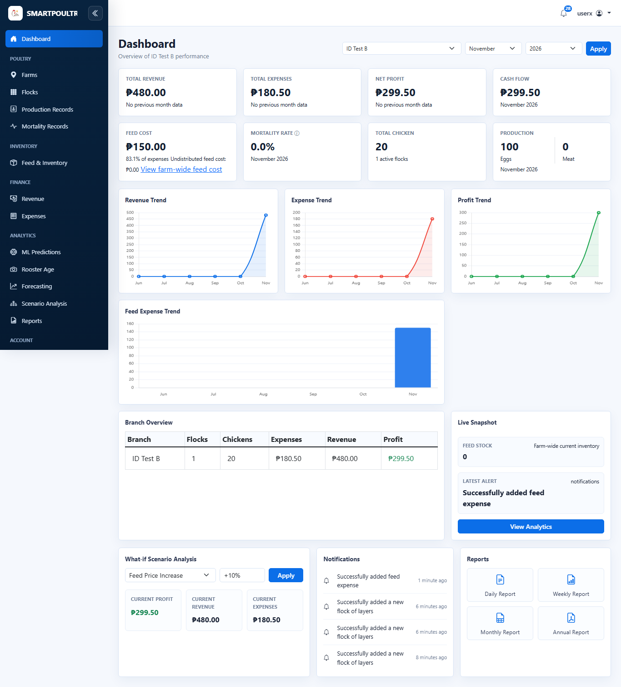
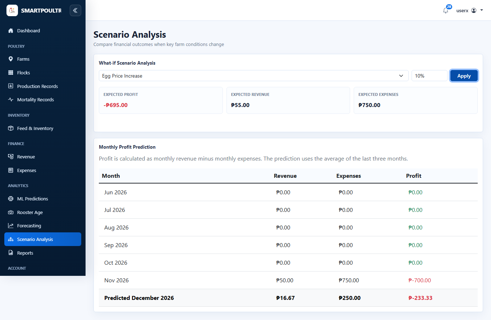
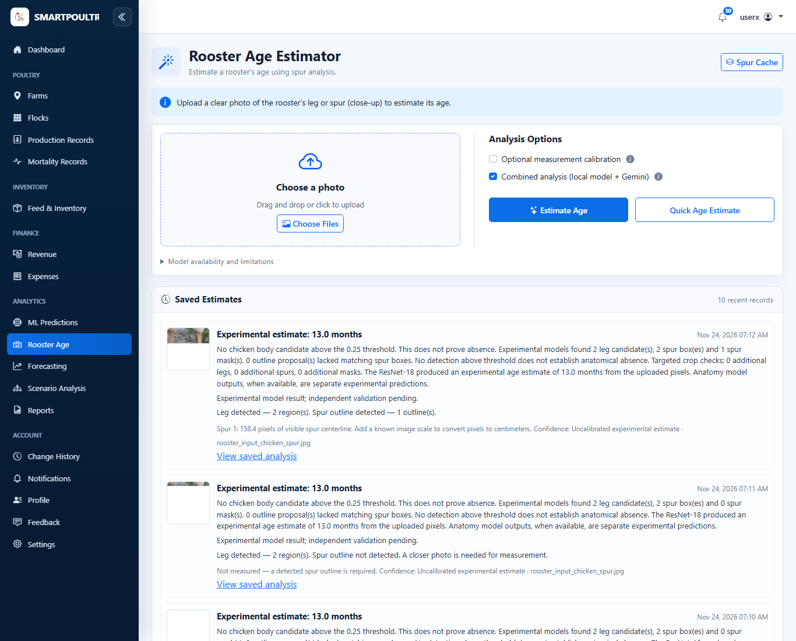

System: https://smartpoultry-l3qo.onrender.com · Tested November 24 and 25, 2026 · Test owner account userx, Account B, administrator account
Automated alpha checks were run on the Render deployment; items not run are listed under Still pending. Of 39 tests, 36 passed, 0 failed, 2 are observations or partial results for the researchers to judge, and 1 is a rating not yet given. The researchers' Poor to Very Good ratings are not included; they must come from the researchers.
| Passed | Failed | Observed / partial | Not Run | Total |
|---|---|---|---|---|
| 36 | 0 | 2 | 1 | 39 |
Automated live cases on Render: 74 cases, 72 passed in their final run, 2 not applicable, 0 not run. CASE-051, 063 and 184 failed first and passed after their tests were updated; CASE-013 and 064 passed on rerun. Local regression cases 184, 211, 212 and 217 passed. Full Django suite at commit b4f904a, project environment: 434 tests, 432 passed, 2 skipped, 0 failed. Earlier failures came from packages missing on the test computer and one test outdated by a page redesign.
| Test ID | Criterion | Steps | Expected result | Actual result | Status | Evidence |
|---|---|---|---|---|---|---|
| ALP-01.1 | Consistency | Open the 18 owner pages. | Same layout, stylesheet, side menu and header on every page. | All 18 pages returned HTTP 200 with the same title, stylesheet, side menu (19 links), collapse button and notification bell. | Passed | Run log, 24 Nov 2026 |
| ALP-01.2 | Consistency | Capture the 18 pages at 1366 px (laptop) and 390 px (phone). | Formatting, colors and icons match on every page and device. | One font family and 16 px body text on all 36 views; side menu and header on all; no sideways scrolling. The sidebar first showed the name cut to "SMARTPOULTR" (DEF-07); after the fix the full name appears on Render. | Passed after fix (DEF-07) | desktop_dashboard.png mobile_dashboard.png retest_def07_sidebar_name.png |
| ALP-02.1 | Reusability | Compare the Add button, table, actions and filters on Flocks, Production, Mortality, Inventory, Revenue and Expenses. | The same components look and behave the same on every module. | Each module has a top-right Add button (same primary style) and the same table style. Edit and Delete appear only where records can be changed. None of these six lists has a search box. | Passed | desktop_flocks.png desktop_expenses.png |
| ALP-03.1 | Forgiveness and Tolerance | Check Flocks and Expenses for the delete prompt. | A confirmation prompt appears before deletion. | Both pages contain "Are you sure you want to delete this record?" | Passed | Run log, 24 Nov 2026 |
| ALP-03.2 | Forgiveness and Tolerance | Save an expense, click Delete, click Cancel; click Delete again, click Confirm. | Cancel keeps the record; Confirm deletes it. | Prompt: "Are you sure you want to delete this record? Alpha test expense 11241500". After Cancel the row remained. After Confirm: "Successfully Deleted!" and the row was gone after reload. | Passed | expense_delete_confirm.png expense_deleted_message.png |
| ALP-03.3 | Forgiveness and Tolerance | Open the delete address of production record 6 directly. | Nothing is deleted. | Redirected to Production Records (HTTP 302); record 6 still existed. | Passed | Run log, 24 Nov 2026 |
| ALP-03.4 | Forgiveness and Tolerance | Correct flock 26 quantity 20 to 21 with a reason, then revert. | The correction saves and the Flock ID is unchanged. | Saved (HTTP 200), quantity 21, Flock ID 01; reverted to 20. | Passed | Run log, 24 Nov 2026 |
| ALP-03.5 | Forgiveness and Tolerance | Add a flock with quantity 0. | A new flock with 0 chickens is rejected. | First run: saved and could not be deleted (DEF-01). After the fix (commit 4e8ee38) Render returned "Enter at least 1 chicken for a new flock." and CASE-050 passed. | Passed after fix (DEF-01) | Run log, 24 Nov 2026 |
| ALP-04.1 | Simplicity | Review all pages at laptop and phone width. | Screens are uncrowded with clear buttons and menus. | No page scrolls sideways at either width. On a phone the full menu fills the first screen of every page before the content (DEF-08). | Observed (DEF-08) | mobile_dashboard.png mobile_flocks.png |
| ALP-05.1 | Readability | Measure text sizes on all pages. | Text and charts are easy to read. | Body text is 16 px on every page; the smallest text found is 9.6 px. Legibility is for the researchers to rate from the screenshots. | Observed | desktop_reports.png mobile_reports.png |
| ALP-06.1 | Clarity | Log in with a wrong password. | A clear error; no session. | "Incorrect email or password. Please try again."; no session cookie. CASE-005 and CASE-010 passed. | Passed | Run log, 24 Nov 2026 |
| ALP-06.2 | Clarity | Log in with an invalid email and blank password. | Field-level messages. | "Enter a valid email address." and "Password is required." CASE-001 to 003 and 006 to 008 passed. | Passed | Run log, 24 Nov 2026 |
| ALP-06.3 | Clarity | Record mortality of 100,000 for a 20-bird flock. | Rejected with the limit named. | "Mortality quantity cannot exceed the selected flock quantity (20)." | Passed | Run log, 24 Nov 2026 |
| ALP-06.4 | Clarity | In Add Production Record enter quantity -5 and save. | A clear quantity message; nothing saved. | "Production quantity must be greater than zero."; no record saved. | Passed | production_negative_quantity.png |
| ALP-06.5 | Clarity | Save and delete records; register; change a password; run an estimate. | A success message each time. | "Successfully Added!", "Successfully Deleted!", "Registration Successful!", "Password updated successfully.", "Changes Saved Successfully!" | Passed | expense_saved_message.png account_b_registered.png owner_pw_changed.png |
| ALP-07.1 | User-friendliness | Complete the 10 owner tasks in Part B. | All tasks can be completed. | November 25: all 10 tasks were completed in one automated browser walkthrough (Account B). Task 8 showed the insufficient-history message because that account has no completed months. Task 10 used a second phone-size browser session, not a physical device. An unaided trial by a person has not been done. | Passed (automated); human trial pending | walkthrough/walkthrough_results.json |
| Test ID | Criterion | Steps | Expected result | Actual result | Status | Evidence |
|---|---|---|---|---|---|---|
| ALP-08.1 | Conformance to the Requirements | Open the page for each functional requirement. | Every module page opens. | All 18 owner pages and the admin dashboard opened. | Passed | Run log, 24 Nov 2026 |
| ALP-08.2 | Conformance to the Requirements | Run the automated live cases on Render. | Every requirement works as specified. | 74 Render cases: 72 passed in their final run, 2 not applicable at the time (CASE-049 and 055 were later rewritten and passed on a local test server). CASE-015 to 021 and 031 were run on November 25 with Account B. | Passed | Run log, 24 Nov 2026 |
| ALP-09.1 | Conformance to the Objectives | Exercise Specific Objectives 2.1 to 2.5. | Each mechanism works on real records. | 2.1 records saved; 2.2 Dashboard profit matched hand computation; 2.3 forecast produced for a test branch with six months of records, matching a local recalculation (accuracy on real farm data not established); 2.4 monthly Excel report generated; 2.5 rooster estimate: 13.0 months, "Uncalibrated experimental estimate". | Passed | rooster_estimate_age.png rooster_saved_estimates.png |
| ALP-10.1 | Accuracy | Compare November Dashboard cards with record totals. | Cards equal the totals. | Revenue 50.00, expenses 625.00, net -575.00, equal to the records. | Passed | Run log, 24 Nov 2026 |
| ALP-10.2 | Accuracy | Enter known November records in ID Test B: 100 eggs, sale of 60 at 8.00, expenses 150.00 and 30.50. | Every figure matches hand computation. | Expected 480.00 / 180.50 / 299.50; Dashboard showed 480.00 / 180.50 / 299.50. Available eggs 40. Branch expense report 180.50. Excel report totals 530.00 and 930.50 equal all November records. | Passed | accuracy_dashboard_idtestb_nov2026.png accuracy_monthly_report_nov2026.xlsx |
| ALP-10.3 | Accuracy | Retest INT-027: 10% egg price increase in Scenario Analysis. | Only egg revenue rises. | The first check was not conclusive because all revenue was eggs. November 25: with 160.00 egg revenue in a total of 460.00, the result was 476.00 (an increase on all revenue would give 506.00). Repeated with 240.00 of 840.00: 864.00. | Passed | walkthrough/11_egg_price_mixed_sales.png |
| ALP-11.1 | Efficiency | Time each owner page three times (server response). | Dashboard within 3 s. | Medians 0.07 to 0.40 s; maximum 0.49 s. | Passed | Run log, 24 Nov 2026 |
| ALP-11.2 | Efficiency | Download the expense CSV and monthly Excel reports. | Each report within 10 s. | CSV 0.08 s; Excel 1.22 s and 1.75 s. | Passed | Run log, 24 Nov 2026 |
| ALP-11.3 | Efficiency | Time full browser loads on laptop, phone, and a simulated 3G connection. | No noticeable delay. | Laptop 93 to 384 ms; phone 92 to 485 ms; simulated 3G 209 to 462 ms. The first load after the service sleeps was not measured. | Passed | Run log, 24 Nov 2026 |
| ALP-12.1 | Security | Open the site with http://. | Redirect to HTTPS. | HTTP 301 to https://smartpoultry-l3qo.onrender.com/login/. | Passed | Run log, 24 Nov 2026 |
| ALP-12.2 | Security | Open the 18 pages and the flock API while signed out. | Redirect to Login; API refuses. | All 18 redirected to /login/ (HTTP 302); API returned HTTP 403. | Passed | Run log, 24 Nov 2026 |
| ALP-12.3 | Security | Send 24 requests for records not in the account (12 flocks; 6 production records by API and by edit page). | Cannot be opened. | All 24 returned HTTP 404. | Passed | Run log, 24 Nov 2026 |
| ALP-12.4 | Security | Register Account B and look for Account A data. | Only Account B data appears. | Account B saw 0 records and none of Account A's branch names on 20 pages; reading or editing A's flock 25 and record 6 returned HTTP 404. | Passed | account_b_dashboard.png |
| ALP-12.5 | Security | Retest CASE-184/INT-028 with a staff account without account permissions. | No View link; account page HTTP 403. | No View link; HTTP 403. Cases 184 and 212 passed on Render. | Passed | Run log, 24 Nov 2026 |
| ALP-12.6 | Security | Log out, then open the Dashboard. | Redirect to Login. | Redirected to /login/?next=/dashboard/. | Passed | Run log, 24 Nov 2026 |
| ALP-12.7 | Security | Change the owner and admin passwords, then restore them. | Wrong or weak input rejected; new password works; old one stops working. | Owner: wrong current, mismatch and weak password rejected; change succeeded; old password refused; temporary password worked; original restored. Admin CASE-022 to 024 passed and restored. | Passed | owner_pw_wrong_current.png owner_pw_mismatch.png owner_pw_changed.png |
| ALP-13.1 | Integrity | Correct a flock quantity with a reason; open Change History. | Entry shows user, reason, before and after. | "userx · updated · flocks.Flock #26", the reason, quantity 20 to 21. | Passed | Run log, 24 Nov 2026 |
| ALP-13.2 | Integrity | Change only a flock's Notes; open Change History. | Team to decide. | First run: no Change History entry. After the fix, a Notes edit appeared in Change History on Render. | Passed after fix (DEF-02) | Run log, 24 Nov 2026 |
| ALP-13.3 | Integrity | Create flocks in two empty branches; save production for one. | Both are 01; record links to the right flock. | Both 01; production record 6 linked to ID Test A, flock 01. | Passed | Run log, 24 Nov 2026 |
| ALP-13.4 | Integrity | Retest INT-033 on Render. | No notification while in-app is off. | In-app on: 1 notification. In-app off: 0. Setting restored. | Passed | int033_render_results.txt |
| ALP-13.5 | Integrity | Count records before and after the redeploy of commit 4e8ee38. | No records lost. | 16 flocks, 2 production, 1 sale, 3 expenses before and after. | Passed | Run log, 24 Nov 2026 |
| ALP-13.6 | Integrity | Open saved rooster estimates after the redeploy. | Uploaded photos remain. | First run: photos of estimates 13 to 19 returned HTTP 404 (DEF-06). After the fix, photo 23 was still served after later redeploys. Lost photos were not recovered. | Passed after fix (DEF-06) | rooster_saved_estimates.png |
| ALP-14.1 | Overall Impression | Each researcher gives an overall rating. | Not applicable (rating). | Not Run (researcher rating) | Run log, 24 Nov 2026 |
| ID | Found by | What happened | Status | How to retest |
|---|---|---|---|---|
| DEF-01 | CASE-050 | A new flock with 0 chickens was saved and could not be deleted. | Fixed (4e8ee38); verified on Render | Run CASE-050. |
| DEF-02 | ALP-13.2 | Notes edits are not recorded in Change History. | Fixed (2cb375e); verified on Render: a Notes edit appears in Change History | Edit only Notes and check Change History. |
| DEF-03 | INT-033 | Activity notifications ignored the In-app setting. | Fixed (4e8ee38); verified on Render | Repeat ALP-13.4. |
| DEF-04 | INT-027 | Test expected PHP 365.20; system gives PHP 335.20. | Test corrected; verified on Render November 25 | Run case 211; repeat ALP-10.3. |
| DEF-05 | CASE-184, INT-028 | Test expected a View link that is correctly hidden from staff. | Tests corrected; verified on Render | Run cases 184 and 212. |
| DEF-06 | ALP-13.6 | Uploaded rooster photos are lost at each redeploy: files are kept on the server's temporary disk (MEDIA_ROOT) and render.yaml has no persistent disk. | Fixed (2cb375e): uploads are stored in the database; a new photo was served from it on Render. Photos uploaded before the fix were already lost. | Upload a photo, wait for the next redeploy, and open the saved estimate. |
| DEF-07 | ALP-01.2 | The sidebar name showed as "SMARTPOULTR" beside the collapse button. | Fixed (21392ee); verified on Render | Check the sidebar on any page. |
| DEF-08 | ALP-04.1 | On phones, the full menu fills the first screen of every page. | Fixed (2cb375e); verified on Render: phones show a Menu button and open on the page content | Open any page at phone width and tap Menu. |
| DEF-09 | Code review | After DEF-03, Forecasting would fail on the last day of a month for users with in-app notifications off. | Fixed (c6777b1) with tests; deployed | Run notifications.test_inapp_preference; open Forecasting on November 30. |
| DEF-10 | Owner walkthrough | The site used UTC, so from midnight to 8 AM Philippine time it was a day behind and refused same-day broiler harvests. | Fixed (3137f6d); verified on Render at 12:16 AM | Record a harvest dated today before 8 AM. |
| DEF-11 | Owner guide check | Expenses have no Edit button; a wrong expense had to be deleted and entered again. | Fixed (b4f904a); verified on Render | Edit an expense with a reason; check Change History. |
| DEF-12 | Code review | Negative expense amounts were accepted, which would raise net profit. | Fixed (b4f904a); verified on Render | Enter a negative expense; expect "Expense amount cannot be negative." |
Test updates (not system defects): CASE-051 and CASE-063 were updated because Flock IDs are now numbered per branch; CASE-064 was rerun with a Flock ID that appears once; CASE-013 passed on rerun after a browser timing error.
| Item | Needs |
|---|---|
| Researcher ratings for the 14 Table 55 criteria, including Overall Impression | The researchers |
| Database backups, 99% availability and forecast accuracy on real farm data | Render account access, monitoring over time, and real records |
| ALP-07.1 unaided trial by a person | A researcher or owner |
| First page load after the service has been idle | About 15 minutes of inactivity before the run |
| Acceptance testing, Table 56 | Poultry farm owners, December 7 to 11, 2026 |







All 60 screenshots, the Excel report, and the INT-033 run log are in this folder.